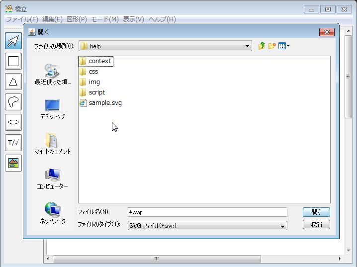
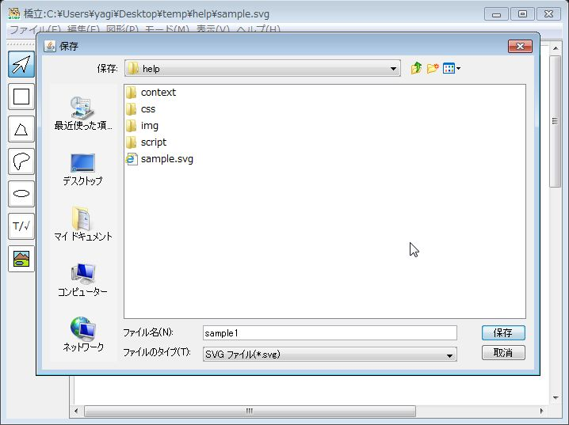
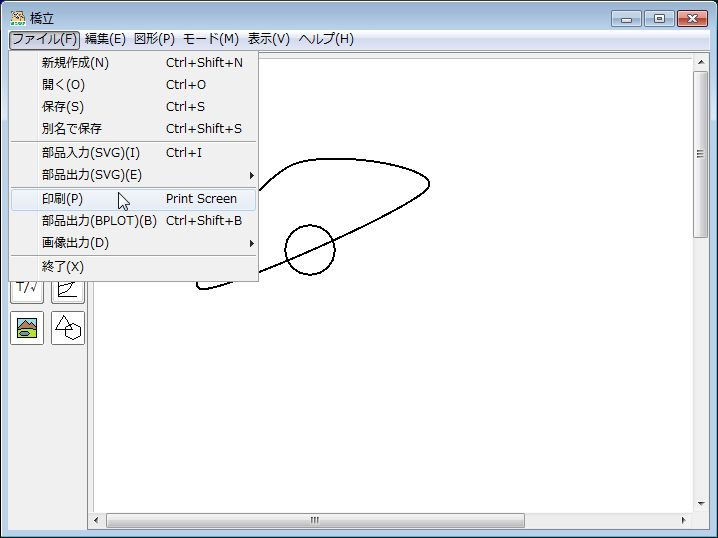

ファイルの入出力と印刷
新しく作る
- (1)
ファイル メニューの新規作成 をクリックする → 描画領域がクリアされる
開く
- (1)
ファイル メニューの開く をクリックする - (2) 開くファイルを選択する
 ファイルを選択
→ - (3)
開く ボタンをクリックする → ファイルが開き、図形が表示される
保存する
- (1)
ファイル メニューの保存 をクリックする
- (2) 新しく作った場合は、
保存 ウィンドウでファイル名を入力して、保存 ボタンをクリックする
ファイル名を変えて保存する
- (1)
ファイル メニューの別名で保存 をクリックする - (2)
保存 ウィンドウでファイル名を入力して、保存 ボタンをクリックする
部品(SVG)を出力する
ファイルに出力する
- (1) 出力する図形を選択する
選択しない場合は全図形が出力される - (2)
ファイル メニューの部品出力(SVG) のファイル をクリックする - (3)
保存 ウィンドウでファイル名を入力して、保存 ボタンをクリックする
クリップボードに出力する
- (1) 出力する図形を選択する
選択しない場合は全図形が出力される - (2)
ファイル メニューの部品出力(SVG) のファイル をクリックする → クリップボードにSVG形式でコピーされて、メモ帳などに貼り付けられる貼り付け
⇒
部品(SVG)を入力する
- (1)
ファイル メニューのSVG入力 をクリックする - (2) 開くファイルを選択する
- (3)
開く ボタンをクリックする → ファイルが開き、図形が入力される
入力された図形は編集できる編集
⇒
印刷する
- (1)
ファイル メニューの印刷 をクリックする
部品(BPLOT)を出力する
- (1) 出力する図形を選択する
選択しない場合は全図形が出力される - (2)
ファイル メニューの部品出力(BPLOT) をクリックする - (2) 出力する用紙をクリックする
- (3)
保存 ウィンドウでファイル名を入力して、保存 ボタンをクリックする
出力したファイルはBPLOTで点字印刷できる
画像を出力する
ファイルに出力する
- (1) 出力する図形を選択する
選択しない場合は全図形が出力される - (2)
ファイル メニューの画像出力(SVG) のファイル をクリックする
- (3)
保存 ウィンドウでファイル名を入力して、保存 ボタンをクリックする
クリップボードに出力する
- (1) 出力する図形を選択する
選択しない場合は全図形が出力される - (2)
ファイル メニューの画像出力 のファイル をクリックする → クリップボードにビットマップ形式でコピーされて、ペイントなどに貼り付けられる貼り付け
⇒